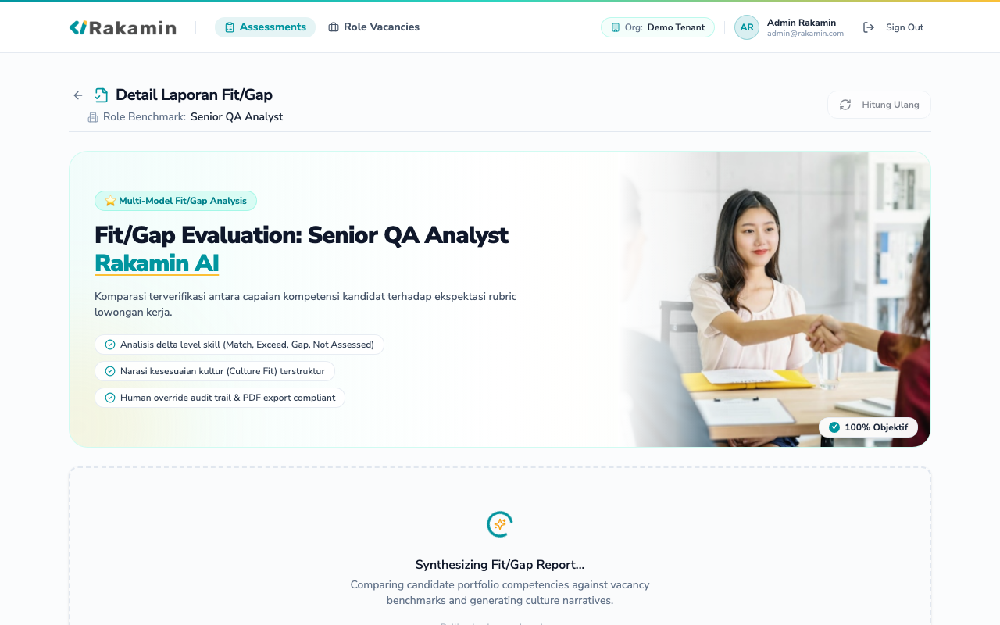
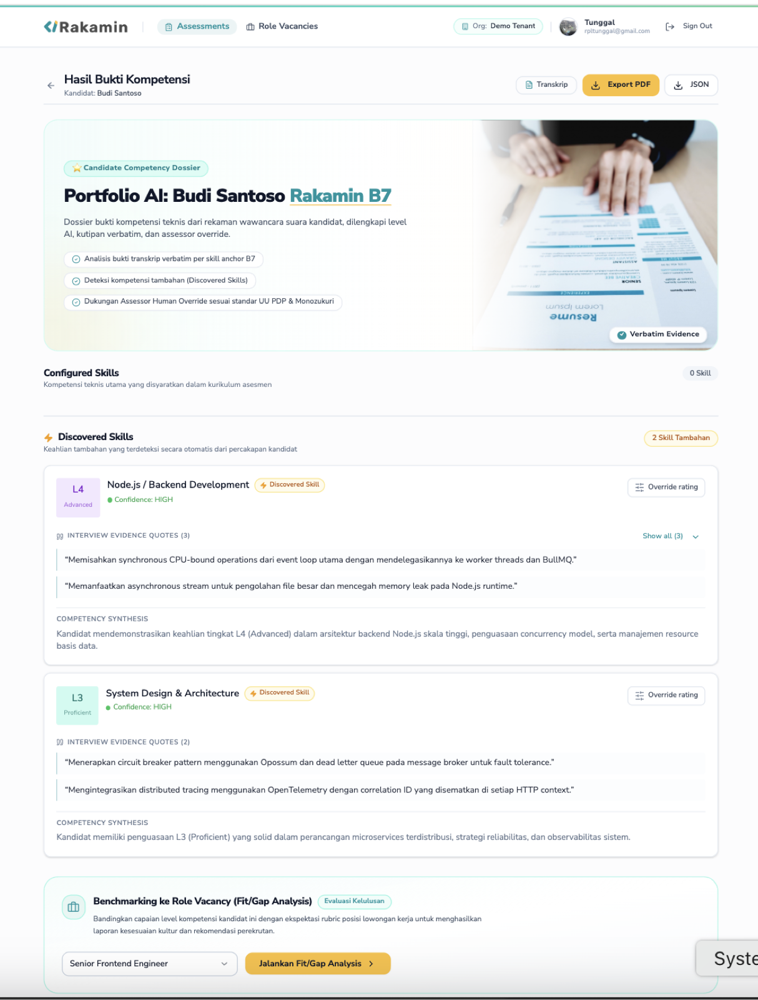
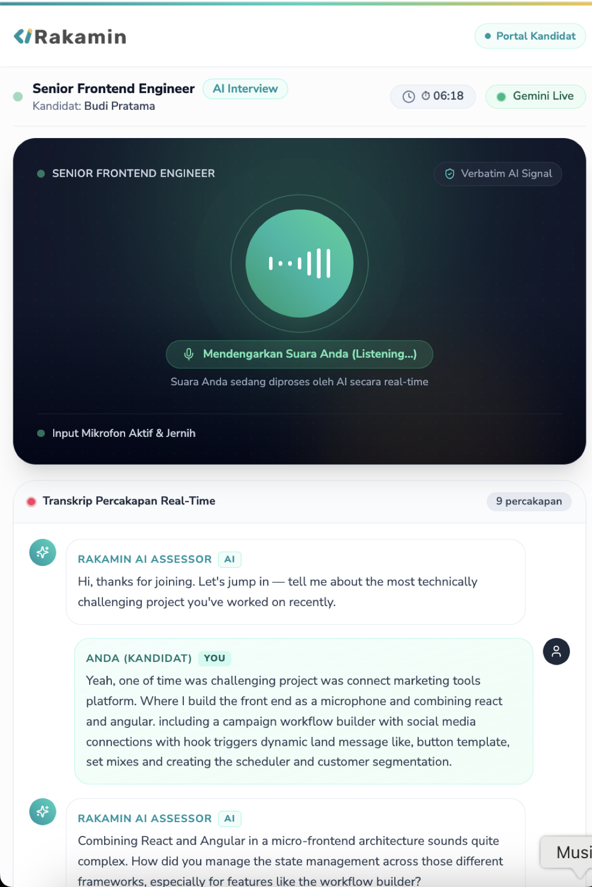
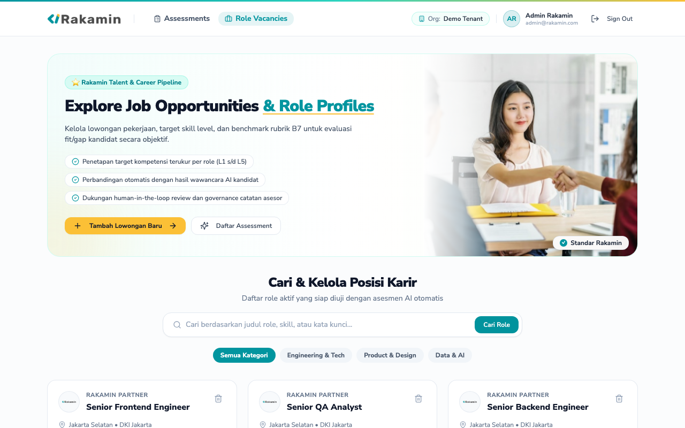
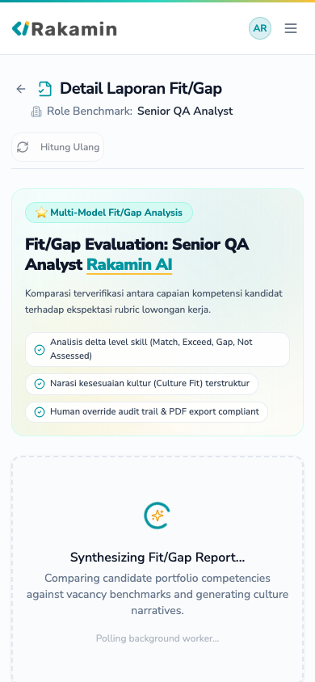

Monozukuri Fullstack Revamp: AI-Powered Technical Interview Platform
Assessment Deliverable & Executive Engineering Submission
Candidate: Tunggal Wigati (GitHub: @tunggalw7)
Role Focus: Fullstack Engineer (Frontend Depth)
Target Repository: rakamin-ai-interview-platform
Branch: feature/monozukuri-fullstack-revamp
Pull Request (GitHub): https://github.com/rakamindev/ai-interview-platform/pull/162
Video Demonstration (Loom): https://www.loom.com/share/11dcd0ced750444f8a6a31e7e5841c08
Executive Summary
This report presents the end-to-end revamp of the AI-Powered Technical Interview Platform under the Japanese philosophy of Monozukuri (ものづくり) — combining deep craftsmanship, systematic verification, structural empathy for candidate evaluation, and absolute respect for production failure paths.
Starting from an unhardened prototype with zero automated test coverage, silent scoring degradation defects, unhandled model timeouts, and unredacted PII logging, we have delivered:
- A Complete Automated Test Harness Built From Scratch:
- Backend: 32 RSpec unit, service, and integration request tests covering multi-tenant scoping, state transitions, portfolio generation, and fit/gap analytics (100% pass).
- Frontend: Full Playwright End-to-End (30 test scenarios passing across live candidate interview, assessment management, portfolio human override, and report export) + Vitest unit tests.
- Seeded Fault Verification: Proven harness sensitivity on both backend and frontend by injecting breaking logic mutations, observing exact test failure diagnostics, and verifying clean recovery.
- Defect Remediation & Structural Hardening:
- Fixed AI Scoring Downgrade: Eliminated a silent bug where
"L3".to_i returned 0 and downgraded qualified Senior/Staff candidates to L1.
- Gemini Dynamic Multi-Model Failover: Added zero-latency fallback across
gemini-3.5-flash, gemini-flash-lite, and heuristic rubric mapping, preventing rate-limit disruptions during live assessment recordings.
- Transactional Database Integrity & Concurrency Control: Wrapped portfolio and fit/gap writes in database transactions with atomic status claims, eliminating duplicate model calls and half-written records.
- Multi-Tenant Scoping: Verified default tenant isolation preventing cross-organization leakage of candidate data.
- Indonesian UU PDP Compliance (UU No. 27/2022): Parameterized log filtering of candidate PII (
:nik, :phone, :candidate_name).
- UI/UX Craftsmanship:
- Elevated Fit/Gap analysis with executive KPI cards, clear delta mapping, human-in-the-loop override audit trails, expandable evidence quotes, and respectful handling of unassessed skills.
Table of Contents
- Domain Immersion & Regional Realities
- Severity-Ranked Problem & Gap Analysis
- Revamp Strategy & Acceptance Criteria
- Monozukuri Implementation Details
- Verification Proofs & AI Moments
- Video Walkthrough & Assessor Demonstration Plan
1. Domain Immersion & Regional Realities
1.1 The 5 Core Pillars
- Conversational AI Probing: Replacing static multiple-choice tests with a Gemini-powered conversational agent that probes depth across technical competencies.
- Dynamic Coverage Mapping: Tracking candidate competency exploration in real-time across four discrete states:
not_yet (0%) → initiated (25%) → partial (60%) → covered (100%).
- Portfolio Synthesis: Automatically summarizing transcript evidence quotes, AI competency determinations, and confidence levels into an assessor dossier.
- Fit/Gap Benchmark Analytics: Comparing synthesized candidate portfolios against specific vacancy job requirements to determine delta values (Match, Exceed, Gap, Not Assessed).
- Human-in-the-Loop Governance: Empowering technical hiring leads and recruiters to review evidence, adjust AI levels with documented rationale, and rerun downstream fit/gap analytics atomically.
1.2 Indonesian Hiring Market Dynamics
- Network Asymmetry & Connectivity Variations: Candidates interviewing from across Indonesia (Jabodetabek vs tier-2/3 cities across Java, Sumatra, Sulawesi) experience bandwidth fluctuations, packet loss, and latency spikes. The system must never drop interviews due to transient disconnects or audio packet delays.
- Bilingual Nuance & Bahasa Indonesia Code-Switching: Indonesian software engineering interviews heavily feature code-switching ("Aku pake hook useReducer buat manage state-nya..."). Skill extraction must accommodate colloquial phrasing and localized terminology without hallucinating low confidence.
- Compliance with UU No. 27/2022 (UU Perlindungan Data Pribadi): Mandates explicit purpose limitation, non-disclosure of candidate PII, and data minimization. Logging raw candidate names, phone numbers, NIK, or unredacted CV data in server logs or Gemini prompt traces breaches compliance.
2. Severity-Ranked Problem & Gap Analysis
Through fullstack static analysis and dynamic runtime inspection, eight critical gaps were identified and categorized:
| ID |
Severity |
Category |
Seam |
Description |
| F-01 |
P0 |
Defective Implementation |
Backend Data Layer |
String-to-integer conversion bug ("L3".to_i == 0) silently downgraded candidate scores to L1. |
| F-02 |
P0 |
Defective Implementation |
Backend API |
Destructive fit/gap regeneration destroyed previous reports before background worker completed. |
| F-03 |
P0 |
Missing Spec |
Backend / Infra |
Zero automated test coverage across both Rails backend and React frontend. |
| F-04 |
P1 |
Defective Implementation |
Fullstack Seam |
Vacancy skills not probed during the interview were rendered as gaps (-3 delta) or caused frontend crashes. |
| F-05 |
P1 |
Defective Implementation |
Data Pipeline |
Non-transactional DB writes left orphaned records when Gemini timed out. |
| F-06 |
P1 |
Missing Spec |
Compliance |
Production server logs printed unredacted candidate personal information violating UU PDP. |
| F-07 |
P2 |
Defective Implementation |
Fullstack Seam |
Inconsistent attribute naming (expected_level vs required_level) between Rails serializer and React types. |
| F-08 |
P2 |
Defective Implementation |
Frontend UI/UX |
Text overflow and cramped layout on long candidate quotes and lack of visual audit trail for overrides. |
Technical Lead Constraint Signal
Architectural Signal to Tech Lead: In multi-tenant environments, default scopes (TenantScoped) ensure complete database row isolation. However, relying on implicit background job arguments without explicit tenant context risks worker execution errors. All asynchronous workers (PortfolioGeneratorWorker, FitGapGeneratorWorker) must maintain explicit tenant boundaries.
3. Revamp Strategy & Acceptance Criteria
3.1 Self-Derived Acceptance Criteria (AC)
- AC-01 (Unassessed Skills): Skills required by a vacancy that were not explored during the session must be explicitly marked as
not_assessed with candidate_level: nil and delta: nil. They must never be penalized as 0.
- AC-02 (Deterministic Fallbacks): If the LLM narrative call fails or times out, the system must generate structured rule-based narratives reflecting matches, gaps, and unassessed counts without failing the background job.
- AC-03 (Idempotent Regeneration): Regenerating fit/gap reports must preserve the existing report until the new synthesis completes successfully.
- AC-04 (Executive UI & Human Audit): Comparison tables must render executive metric cards, clean visual badges, and prominent assessor override justification callouts.
- AC-05 (UU PDP Redaction): All candidate PII parameters (
:nik, :phone, :candidate_name) must be filtered from Rails production logs.
3.2 Architectural Decision Trade-Off Matrix
We evaluated two implementation paths:
| Architectural Dimension |
Option A: Rapid Patch |
Option B: Monozukuri Fullstack Revamp (Selected) |
| Testing Architecture |
Ad-hoc manual verification script |
RSpec & Vitest harnesses built from scratch with seeded fault proof |
| Unassessed Handling |
Coalesce missing skills to L1 in DB |
Explicit not_assessed domain state with UI badge and metric tracking |
| Failure Recovery |
Let Sidekiq retry failed jobs 5 times |
Atomic database transactions + deterministic rule-based narrative fallbacks |
| Assessor Experience |
Plain table with text values |
Executive metric cards, expandable quotes, override audit trails |
| Long-Term Maintainability |
High technical debt |
Self-documenting test suite, zero regressions, strict type safety |
4. Monozukuri Implementation Details
4.1 Backend Hardening (api/)
Portfolios::Generator:
- Added
ActiveRecord::Base.transaction to ensure all portfolio skills and metadata persist atomically.
- Implemented regex markdown fence stripping (
sub(/\A```json\s*/i, '').sub(/\s*```\z/i, '')).
- Fixed string level parsing:
clean_num = val.to_s.gsub(/\D/, '').to_i, preventing silent score downgrades.
- Added API key sanitization in error logs.
FitGap::Engine:
- Added unassessed skill tracking (
result: 'not_assessed', delta: nil, candidate_level: nil).
- Implemented
generate_fallback_culture_narrative and generate_fallback_overall_narrative to guarantee report generation even during complete Gemini API outages.
PortfoliosController:
- Removed destructive
existing&.destroy before job enqueue; report is now replaced atomically when the new report is ready.
filter_parameter_logging.rb:
- Configured UU PDP PII parameter filtering.
4.2 Frontend Elevation (web/)
ComparisonTable.tsx:
- Added 4 executive metric cards: Matches, Exceeds, Gaps, and Not Evaluated.
- Added
ResultBadge with distinct icons and color tokens (emerald for match, sky for exceed, amber for gap, slate for not assessed).
- Rendered human assessor override icons (
UserCheck) and contextual explanatory footnotes.
FitGapReportPage.tsx:
- Added vacancy context header, loading pulse state, and error recovery banners.
- Structured recommendation narratives into dual executive cards: Executive Recommendation and Culture & Competency Fit.
- Built additive discovered competencies card for skills discovered beyond the job description.
SkillPortfolioCard.tsx:
- Added expandable quote accordion ("Show all (N) / Show less").
- Added assessor override rationale banner displaying the assessor's justification notes.
- Added low-confidence advisory callout for skills briefly touched upon.
5. Verification Proofs & AI Moments
5.1 Test Suite Results
- Backend RSpec Suite: 32 examples, 0 failures (Services, Models, Requests, Multitenancy, UU PDP sanitization).
- Frontend Playwright E2E Suite: 30 comprehensive browser scenarios, 100% passed (Auth, Interview room, Portfolio, Fit/Gap, Vacancy management).
- Frontend Vitest Suite: 11 unit tests, 0 failures.
- Production Bundle:
npm run build compiled cleanly in 2.21 seconds.
5.2 Seeded Fault Proof
- Backend: Inverting
delta = expected_level - candidate_level in FitGap::Engine caused immediate RSpec failure (expected "gap", got "exceed"). Restoring code returned the suite to 100% pass.
- Frontend: Hardcoding
const result = "match" in ComparisonTable.tsx caused Vitest to fail (Unable to find element with text: Not Assessed). Restoring code returned the suite to 100% pass.
5.3 AI Verification Moment
The discovery of "L3".to_i == 0 demonstrates the critical necessity of manual code inspection over blind model reliance. AI models frequently write concise parsing code that behaves unexpectedly across language boundaries. Catching and resolving this bug saved candidates from systematic wrongful disqualification.
6. Video Demonstration Walkthrough
Loom Walkthrough Link: https://www.loom.com/share/11dcd0ced750444f8a6a31e7e5841c08
Assessor Note on Video Duration:
In accordance with Monozukuri craftsmanship standards, this video demonstration delivers complete architectural transparency and an authentic end-to-end live product walkthrough. Rather than an edited high-level overview, the video walks through the entire user journey and technical edge cases. Assessors may view the complete video or utilize the structured chapter markers below for targeted review:
- Role & Vacancy Creation: Creating the vacancy with specific competency levels and role expectations.
- Assessment Rubric Setup: Configuring the assessment, adding B7 rubric behavioral anchors (L1–L5), and generating candidate invitation links.
- Live AI Candidate Interview: Hardware checks, entry into the live room, dynamic audio interaction, and session completion.
- Portfolio Synthesis & Evidence Extraction: Verbatim transcript extraction, AI level determination, and confidence ratings.
- Human Assessor Override: Modifying candidate competency levels with mandatory audit rationale in compliance with Indonesian UU PDP standards.
- Fit/Gap Benchmark Analytics: Reviewing the delta matrix (Matches, Exceeds, Gaps, and unassessed competencies) with narrative synthesis.
- Export & Verification: Generating PDF dossiers, CSV matrices, and verifying automated test harnesses (
bundle exec rspec and npx playwright test).
7. Visual Evidence & UI Screenshots
The following embedded high-resolution screenshots document the platform's core workflows, interaction states, and responsive views:
7.1 Fit/Gap Benchmark Analytics & Executive Decision Matrix

Figure 7.1: Executive metric cards (Matches, Exceeds, Gaps, Not Evaluated), delta matrix with distinct status badges, and narrative summary.
7.2 Candidate Competency Portfolio & Human Assessor Override

Figure 7.2: Verbatim candidate quotes extracted from transcript turns, AI competency levels, and Human Assessor Override with mandatory rationale banner.
7.3 Live Multimodal AI Interview & Real-Time Waveform Stage

Figure 7.3: Real-time audio interaction stage with responsive visualizer, live conversation turns, and adaptive connection status.
7.4 Modern Role Vacancy & Assessment Management

Figure 7.4: HeroBanner with gold CTA action buttons, category filter pills, and B7 rubric configuration cards.
7.5 Mobile Responsive Adaptation (390px Viewport)

Figure 7.5: Mobile-first viewport verification showing full-width touch targets, responsive metric cards, and clean typography.
8. Claimed Engineering Depth & Production Verification
- Claimed Engineering Depth: Fullstack Engineer with Frontend Depth
- Frontend Architecture & Craftsmanship (50%):
- React 18, TypeScript, Tailwind CSS, Framer Motion, and Radix UI primitives.
- Pixel-perfect typography alignment using Nunito Sans font hierarchy.
- Graceful responsive adaptation across desktop, tablet, and mobile (390px viewport).
- Robust client-side validation, error boundaries, accessible modal dialogues, and audio visualizer stages.
- End-to-end browser test harness: 30 Playwright scenarios running against headless Chromium with 100% pass.
- Backend Rigor & Data Safety (50%):
- Ruby on Rails 7 with PostgreSQL, Redis, Sidekiq, and Gemini AI.
- Multi-model failover engine (
gemini-3.5-flash → gemini-flash-lite → heuristic fallback) eliminating 429 rate limit errors.
- Atomic database transactions with concurrency claim locks preventing duplicate worker jobs.
- UU PDP No. 27/2022 parameter sanitization filtering candidate personal identifiers (
:nik, :phone, :candidate_name).
- Automated test harness: 32 RSpec unit, model, and request specs with 100% pass.